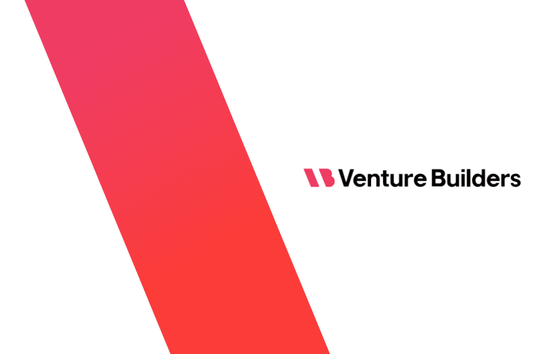

Amplifying Founders Others Overlook
Venture Builders connects a venture fund, accelerator-as-a-service, and vibrant founder community into one flywheel — generating deal flow, supporting founders, and reinvesting in the ecosystems that fuel it all.
Venture Builders Fund is an early-stage venture fund and accelerator-as-a-service provider backing founders from vetted accelerators and venture builders across North America. We invest in pre-seed and seed stage startups from underserved startup ecosystems.
Our thesis
The best founders don't always raise in Silicon Valley
They build in Memphis, Cleveland, Boise, and hundreds of other communities where capital and connections are scarce — but the caliber of work is not.
We solve this by doing three things exceptionally well. Every piece reinforces the next. Deal flow rises. Ecosystems strengthen. Capital fuels growth.
How we work
Three interconnected pillars
The Fund
An early-stage fund investing in exceptional founders emerging from vetted accelerators and venture builders across North America. Deal flow from trusted ecosystem partners who provide behavioral data — not just pitch decks.
Learn moreCommunity & Content
A growing network of founders, mentors, and ecosystem builders united by a shared mission to support the overlooked. Pivot, our founder story platform, is where investors and founders find each other through real stories.
Join the communityAccelerator-as-a-Service
Fractional accelerator leadership and centralized programming for underserved startup ecosystems worldwide. Local partners scout founders. We deliver world-class curriculum, mentorship, and programming.
Explore the modelSelf-reinforcing
The Flywheel
Each pillar feeds the next — a continuous loop of deal flow, founder support, and ecosystem growth.
Capital Fuels Growth
Vetted, accelerator-backed founders who wouldn't otherwise have access. Strong founders attract more ecosystem partners. More partners generate better deal flow.
Deal Flow Rises
World-class programming strengthens local ecosystems. Stronger ecosystems produce better founders. Better founders attract investor attention and fuel the fund.
Ecosystems Strengthen
Founder stories attract investors seeking quality deal flow. Investors discovering founders reinforces the ecosystem. More visibility brings more founders into the network.

Why this matters now
The traditional VC model was designed to serve a handful of cities
The rest of the country has been overlooked. Not because the founders are less capable — because the system was never built to find them.
We spent 15 years building relationships with accelerators, studios, hubs, and innovation programs across six continents. We taught many of these organizations the best practices they use today.
- We understand how each partner coaches and supports startups
- We know their resources and how reliable their judgment is
- Trusted relationships built over years of showing up and delivering value
- Trust is the mechanism behind everything we do
The people
The team behind VBF

Jillian Friot
Co-Founder
Jillian spent the past decade fostering a community of startup support organizations before stepping in as CEO of the Global Venture Network — a global venture community spanning six continents with over 300 ecosystem leaders supporting over 5,500 startups per year. She built the SOLIDWORKS for Startups program serving 30,000+ hardware startups including Boom Supersonic, Bevi, and SparkCharge, and advises startups through Rhodes College Entrepreneurship Program, Fierce Foundry, and SXSW.

Steve Hayton
Managing Partner & Co-Founder
Steve served as GVN's Chief Experience Officer, where he designed, built, and delivered the first-of-its-kind curriculum to train ecosystem leaders from across the globe how to build accelerators and venture studios. With a decade in science, five years building companies, and five years in journalism, Steve brings investigative rigor and founder empathy to every interaction.

Paul Kim
Venture Partner
Paul brings 25+ years of institutional Wall Street experience — equity research at Bank of America and PaineWebber (now UBS), and portfolio management at SAC Capital (now Point72) and Omega Advisors, specialising in global technology, media, and telecoms. He brings institutional-grade analytical rigour to VBF's investment process.
"Steve has been an invaluable connector for both my company, Base, and for me personally as a founder. He's incredibly quick to respond and consistently makes thoughtful introductions that have opened meaningful doors for us."
Paige McPheely, Founder Base
What sets us apart
We do things differently
Giving Back
A portion of GP carry flows back into the ecosystems that generated the deal flow — sharing value with the organizations that develop the founders we invest in.
Challenging the Status Quo
The traditional model concentrates in major tech hubs. We're already on the ground in rising ecosystems — years before the rest of the market shows up.
Deep Trust
In many cases, we taught these organizations how to operate. We understand their methodologies and standards. This is a working relationship built over years — not a referral pipeline.
Genuine Enthusiasm
Building something meaningful should be enjoyable. Everyone involved chose this work because they cared. We bring that energy to everything we do.
Ready to build something different?
Whether you're a founder, an ecosystem builder, or an LP who believes in doing things differently — we'd love to hear from you.